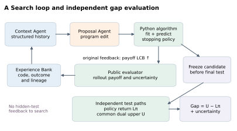
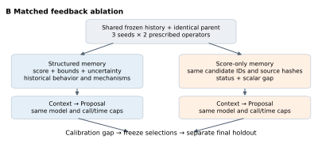
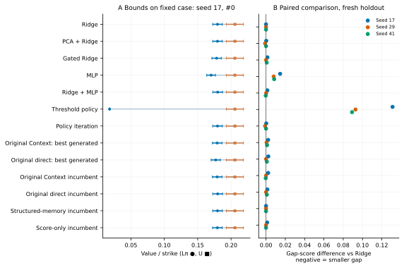
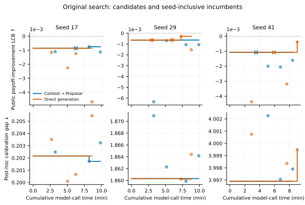
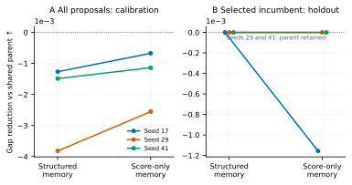
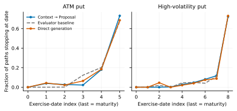
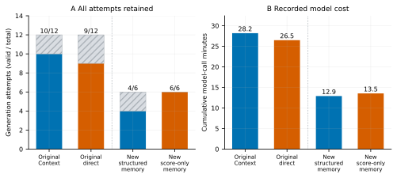

状态：已完成。统计口径和实验边界见 README。
Excel 数据 · 结果表
Executed original pipeline. Public payoff LCB drives search. Candidate selection freezes before independent primal–dual evaluation; hidden gap is not fed back. The upper-bound construction is shared across Python policies.
PDF · SVG
New fixed-history, fixed-parent feedback ablation. Both arms allow one Context and one Proposal call per attempt, the same model, operator, parent and evaluator budget; a failed Context prevents a Proposal call. Only memory contents differ. Ten frozen Context plans continue after a documented pre-generation workspace recovery; two Context timeouts are retained. This isolates feedback representation, not complete architecture or recursive self-improvement.
PDF · SVG
Fresh holdout comparison. Left: raw normalized lower and upper estimates with component ±1.96 SE bars on the preselected seed-17 / hidden-000 case. They are conditional Monte Carlo intervals, not population uncertainty. Right: gap-score differences from Ridge under matched seed/instance budgets; each point is one seed, no unsupported significance claim. New ablation incumbents are selected solely by calibration scores with the parent retained as an option.
PDF · SVG
Original two-round search, four generation attempts per seed and pipeline. Lines include the initial best reference and follow public-score selection; dots are individual generated candidates, crosses are generation failures. Bottom panels independently re-evaluate those same incumbents on the supplemental calibration panel. These are post-hoc gap diagnostics, not evidence that the original search consumed gap feedback. Model time includes Context calls and timeouts, not parallel elapsed time.
PDF · SVG
Matched feedback ablation with three seed blocks and two prescribed operators. Left: mean proposal gap reduction within seed across both operators; generation failures retain the parent (zero reduction) and remain in the denominator. Right: fresh-holdout reduction of the calibration-selected incumbent, allowing retention of the initial parent; small horizontal offsets distinguish overlapping seeds. Lines pair the two feedback arms within a seed. No claim of statistical superiority from three blocks.
PDF · SVG
Observed stopping-time distributions of original frozen winners at seed 17, averaged across two repeats on the original public panel. The last date includes all remaining paths at maturity. This is a behavior illustration, not proof of why a mechanism worked or failed.
PDF · SVG
Actual generation reliability and model-call duration, including failed and timed-out calls. Hatched segments are failures. Original pipelines and the new feedback experiment are separate experiments, not matched against each other. New arms share call/time caps; realized calls, tokens and duration can differ. Context calls from the infrastructure-interrupted run are counted once; recovery issues only previously uncalled Proposals. Missing token reports are explicitly retained in the cost table.
PDF · SVG